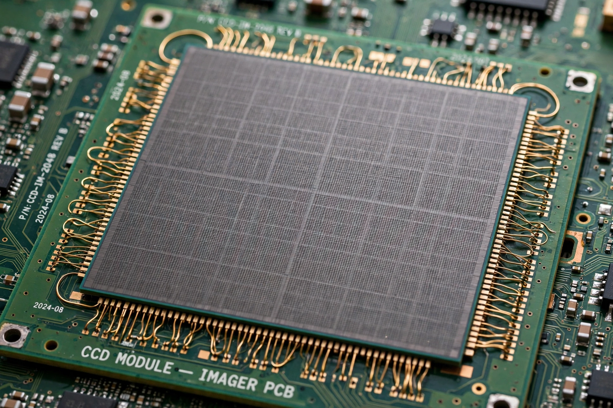

Charge-coupled device

[Image: Photograph of a large CCD sensor chip with its grid of pixels visible]A charge-coupled device (CCD) is a device for moving electric charge — generated by light in a photosensitive semiconductor — across its surface to a readout register, enabling high-quality image sensors. Invented at Bell Labs in 1969 by Willard Boyle and George E. Smith (Nobel Prize 2009), the CCD was the first successful digital imaging technology and remains prized for scientific imaging.
In a CCD, photons create electron–hole pairs in silicon pixels; the collected charge is proportional to exposure and is shifted pixel-to-pixel ('coupled') to an output amplifier that converts it to a voltage. CCDs combine high quantum efficiency (over 90% at peak), low noise and excellent linearity — the reasons they equipped the Hubble Space Telescope, professional astronomy cameras, and photometric surveys for decades, and why the first digital cameras, medical imagers and barcode scanners used them. CMOS sensors have since taken over consumer applications on cost and power, but CCDs persist in demanding scientific niches.
History in brief
Conceived in an hour's brainstorm as a memory device, demonstrated within months, and commercialised by Fairchild and others in the 1970s, the CCD's astronomical adoption in the late 1970s multiplied telescope power more than any instrument since photography — faint-object astronomy, and hence modern cosmology, is substantially a CCD-enabled science.